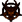

 DOOM 64 EX
Details
 |
|
| Playtime | Not Played |
| Last Activity | Never |
| Added | 18-Aug-25 16:37:26 |
| Modified | 18-Aug-25 16:41:14 |
| Completion Status | Not Played |
| Library | Playnite |
| Source | |
| Platform | PC (Windows) |
| Release Date | 10-Aug-08 |
| Community Score | |
| Critic Score | |
| User Score | |
| Genre | Shooter |
| Developer | Samuel Villarreal |
| Publisher | |
| Feature | |
| Links | Twitch |
| Tag | |
Description
Doom 64 EX is a reimplementation of Doom 64 by Samuel "Kaiser" Villarreal. It is based on Doom3D, though rewritten for OpenGL rather than DirectX, and including some bug fixes from Boom and MBF. It aims to recreate the look and feel of Doom 64 as closely as possible, based on specifications obtained through reverse engineering, similarly to how Kaiser also created SvStrife.
The first public version of Doom64 EX was released on July 10, 2008.
Compared to the Doom 64: Absolution TC, the principal difference is that Doom64 EX uses the original data. A tool provided with the port can create a DOOM64.WAD IWAD from the ROM.
Doom 64 plays almost identically to earlier games in the Doom series; the player must advance through numerous levels fighting demons, collecting weapons and keys and hitting switches in order to reach the level's exit while surviving deadly traps and ambushes. Changes were made to the Doom engine for use in Doom 64, and gameplay elements were altered.
Weapons
All the weapons from the original game are present, but redrawn with new sprites. The chainsaw was given two blades instead of one, the fists have bloodstained gloves on instead of brass knuckles, the plasma rifle has an electric core that emits a sparking sound when equipped, the rocket launcher has a small kick when fired, pushing the player back a bit, the shotgun's reloading cock is at the handle instead of under the barrel and the Super Shotgun reloads faster and causes recoil.
A new weapon known as the Laser, or "Unmaker", was added, using the same cell ammunition as the plasma rifle and BFG. It was first mentioned in the Doom Bible and was planned to be featured in the PC Doom games but never appeared. Its appearance in Doom 64 is its only official appearance. With the power of three ancient artifacts found in the game, it becomes more powerful by shooting three laser beams (at a quicker rate than default) instead of one. The first artifact increases the laser speed, the second artifact adds a second laser and the third artifact allows the weapon to fire three simultaneous lasers which can automatically aim separately from one another, allowing the weapon to attack three different enemies at once.
Plot
Following the conclusion of the original Doom series, the sole Marine who survived the horrors of hell had returned to Earth, reclaiming it from the invasion that almost eradicated the human race. Demons still lingered within the abandoned halls and complexes of Phobos and Deimos. As a last-ditch effort, the military decided to bombard the moons with extreme radiation in hopes of killing off any remaining demons. Initially it was successful, however something survived the exposure. The radiation blocked the military's sensors and allowed something to slip past them undetected. This mysterious entity, possessing the ability to resurrect any demon it came across, recreated the entire demonic horde and made it stronger than ever before. A Marine strike force was ordered to contain the advancing armies of hell but was mercilessly slaughtered within moments. The player's character is the sole survivor of this group.
The first public version of Doom64 EX was released on July 10, 2008.
Compared to the Doom 64: Absolution TC, the principal difference is that Doom64 EX uses the original data. A tool provided with the port can create a DOOM64.WAD IWAD from the ROM.
Doom 64 plays almost identically to earlier games in the Doom series; the player must advance through numerous levels fighting demons, collecting weapons and keys and hitting switches in order to reach the level's exit while surviving deadly traps and ambushes. Changes were made to the Doom engine for use in Doom 64, and gameplay elements were altered.
Weapons
All the weapons from the original game are present, but redrawn with new sprites. The chainsaw was given two blades instead of one, the fists have bloodstained gloves on instead of brass knuckles, the plasma rifle has an electric core that emits a sparking sound when equipped, the rocket launcher has a small kick when fired, pushing the player back a bit, the shotgun's reloading cock is at the handle instead of under the barrel and the Super Shotgun reloads faster and causes recoil.
A new weapon known as the Laser, or "Unmaker", was added, using the same cell ammunition as the plasma rifle and BFG. It was first mentioned in the Doom Bible and was planned to be featured in the PC Doom games but never appeared. Its appearance in Doom 64 is its only official appearance. With the power of three ancient artifacts found in the game, it becomes more powerful by shooting three laser beams (at a quicker rate than default) instead of one. The first artifact increases the laser speed, the second artifact adds a second laser and the third artifact allows the weapon to fire three simultaneous lasers which can automatically aim separately from one another, allowing the weapon to attack three different enemies at once.
Plot
Following the conclusion of the original Doom series, the sole Marine who survived the horrors of hell had returned to Earth, reclaiming it from the invasion that almost eradicated the human race. Demons still lingered within the abandoned halls and complexes of Phobos and Deimos. As a last-ditch effort, the military decided to bombard the moons with extreme radiation in hopes of killing off any remaining demons. Initially it was successful, however something survived the exposure. The radiation blocked the military's sensors and allowed something to slip past them undetected. This mysterious entity, possessing the ability to resurrect any demon it came across, recreated the entire demonic horde and made it stronger than ever before. A Marine strike force was ordered to contain the advancing armies of hell but was mercilessly slaughtered within moments. The player's character is the sole survivor of this group.